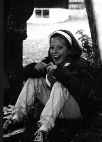
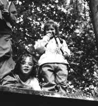
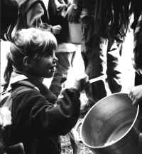

26. September
Heute hat unser HELA angefangen. Wir fuhren mit dem Zug von Buchs bis nach St. Gallen.

Wir fuhren ca. 2 Stunden bis nach Weissbad. Alle nesteten sich ein. Als sich alle eingenestet hatten besammelten wir uns im Esssaal. Sheela sagte uns was wir tun müssen. Dann konnte man die Speze beginnen. wir arbeiteten bis es Znacht gab. Nach dem Znacht musste man die Ämtlis erledigen.(Armon), Cascaia, Yogi, Risus
27. September
Zuerst waren wir aufgestanden dann hatten wir Zmorgen gegessen. Dann hatten wir die Emtchen machen müssen machen. Dann waren wir auf eine grosse Wiese gegangen dort hatten wir eine Hütte bauen müssen. Dann hatten wir einen Postenlauf rennen müssen. Dann mussten wir Tiere (Ballone) suchen und mussten auch noch Fragen beantworten. Nachher waren wir wieder zum Lagerhaus zurück gegangen. Dann assen wir zu Abend.
Gümper, Aqui, Helio, Pepito
28. September
Heute sind wir früh aufgestanden. Wir haben einen Lönsch gepackt und die Regenjacke.

Also gingen wir auf den Hohenkasten und alle waren müde als wir ins Lager kamen. Dann sind wir mit der Seilbahn herunter gefahren und liefen zurück.(Rahel), Fäger, Diabolo, Schlingel
29. SeptemberWir waren heute früh aufgestanden wir haben Zmorgen gegessen wir mussten am 10 Uhr draussen gewesen dann lauften wir in die grosse Wiese dann mussten wir eine Stadt bauen wir haben die Stadt gebaut dann waren die Mädchen und Buben waren den Schatz go suchen und dann machten wir viel Spiele gemacht und dann laschend wir in die Jugenhärbärk und äsen wir Znacht.
Syrius, Daggel, Caramba
30. September
Wir gingen schwimmen. Wir machten einen Speztz. Wir schwimmen um die Wette. Wir mussten 10 Sekunden unter Wasser bleiben. Und dann zuletzt mussten wir 3 Schwimmregeln aufsagen.
Sputnik, Snörra, Fortuna, Schlumpf
1. Oktober
Heute machten wir die Olümpyade. Als erstes mussten wir Farben Ballon auswendig aufsagen. Als zweites mussten wir mit Golfbällen in ein Viereck werfen. Als drittes mussten wir einen Hindernis laufen.

Und als letztes Spiel mussten wir Gegenstände auswendig lernen. Und als wir fertig waren mussten wir noch 2 Runden laufen. Nachher gingen wir ins Heim zurück und mussten auch noch ein Posten machen.Flupp, Xenia, Frisbee, Chnopf
2. Oktober
Heute mussten wir ausnahmsweise früh aufstehen. Das war ca. 7.01 Uhr aufstehen. Wir waren alle noch sehr müde. Danach fuhren wir mit dem Zug nach Appenzell. In Appenzell stiegen wir um und fuhren nach St. Gallen. Als wir in St. Gallen waren liefen wir fort und lösten die Fragen. Punkt 12.00 Uhr mussten wir wieder am gleichen Ort wie am Anfang stehen. Wir liefen ca. 2 min und dort assen wir.
Anonymi